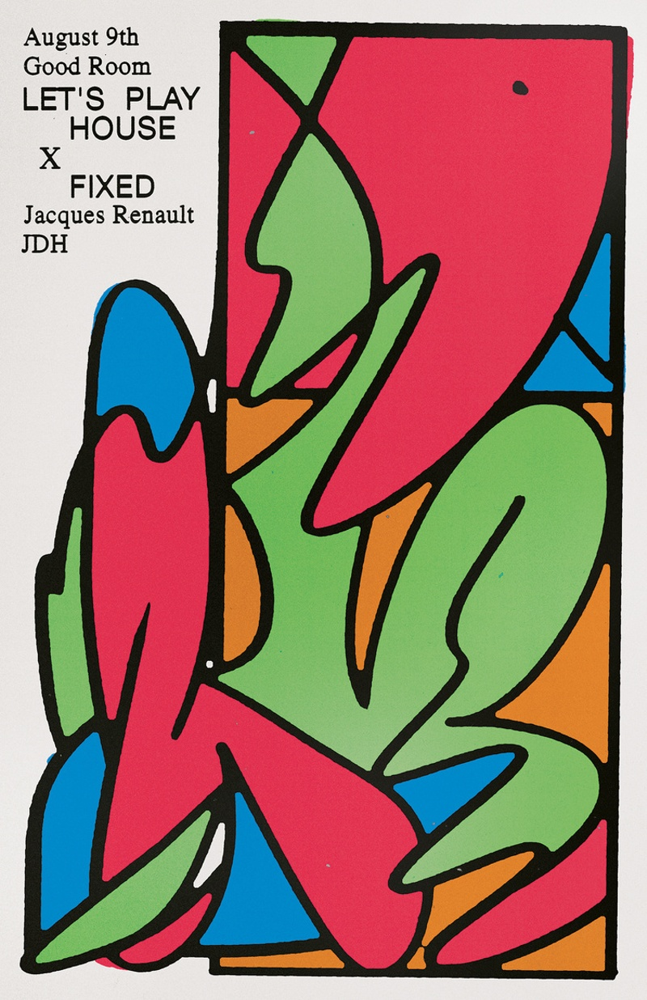
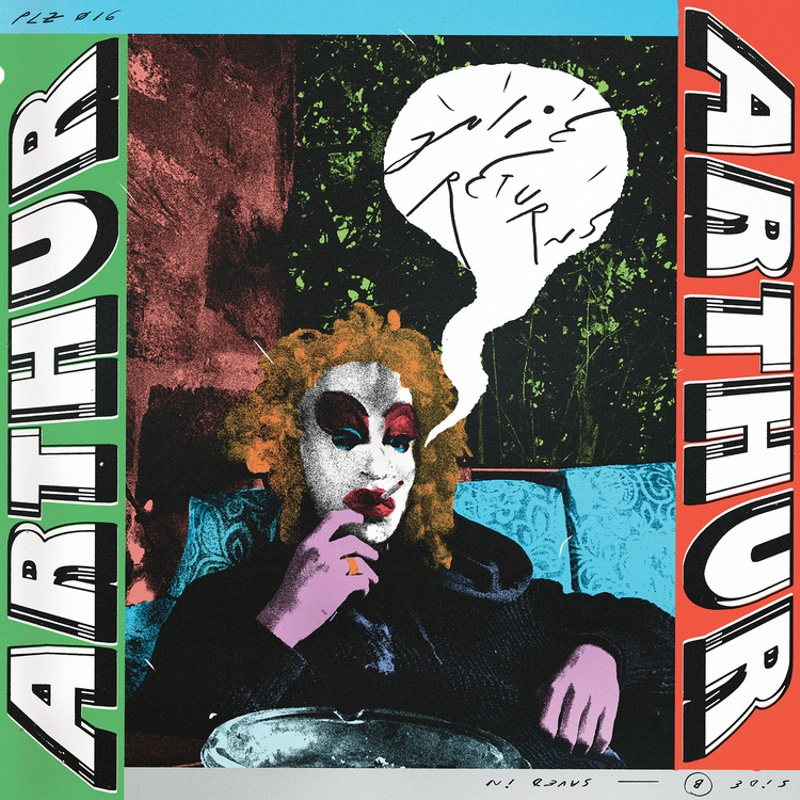
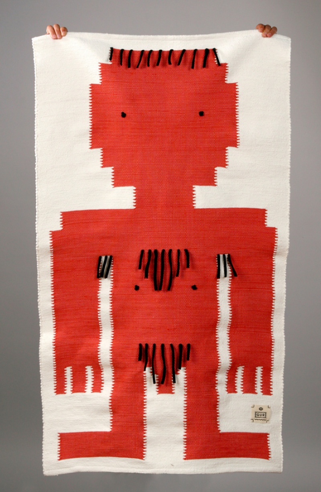
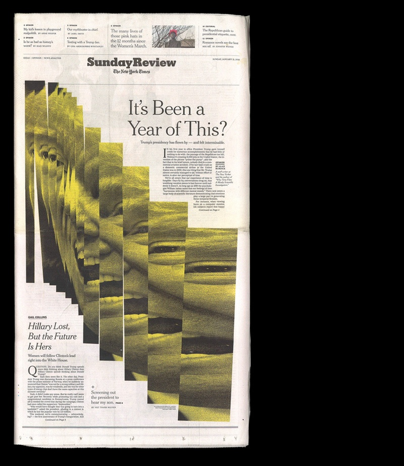
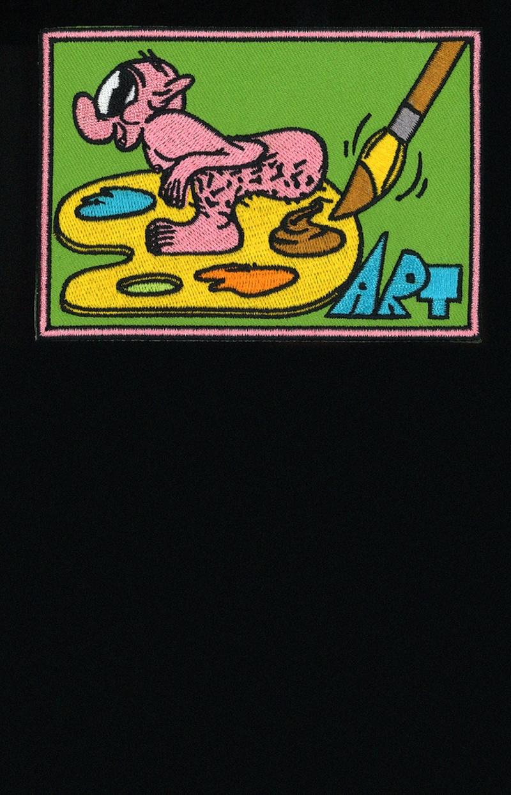
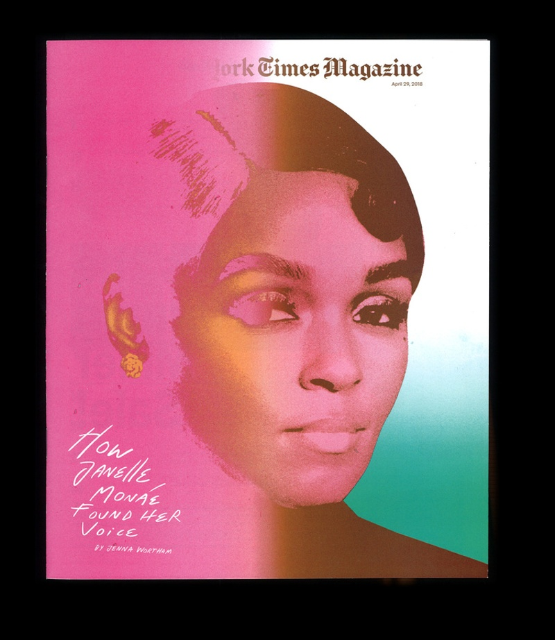
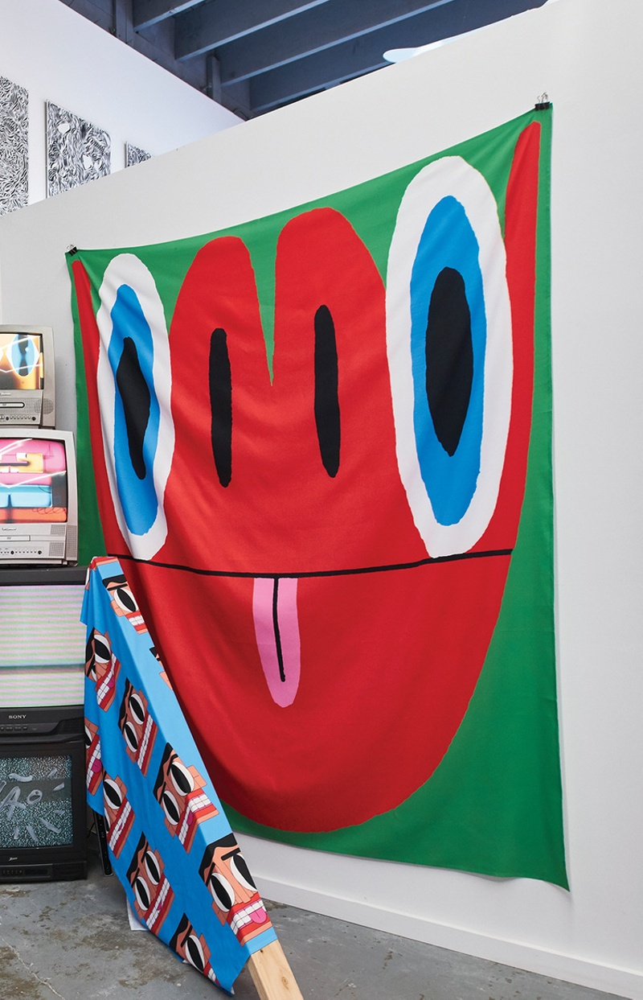
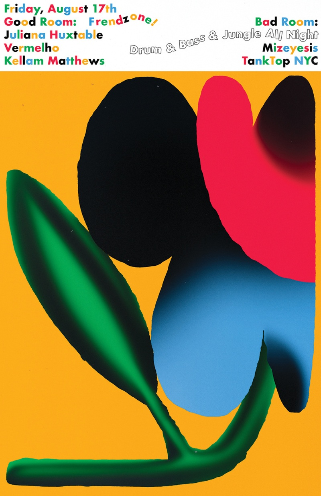

Bráulio Amado
Graphic Designer, Illustrator
Bráulio Amado is a graphic designer and illustrator from Portugal, currently living in New York City. His vibrant, kinetic work has appeared in the New York Times, Businessweek, WIRED, and more, and he’s collaborated with artists including Beck, Frank Ocean, Róisín Murphy, and Robyn. He also co-runs the NYC multi-purpose art space Sixth Street Haunted House (SSHH).
How did you first get into drawing and illustrating?
I think I was always into drawing, but I was honestly terrible at it. I tried to do graffiti, too, and was also really bad at it. I only starting making things I was happy with when my parents got me a computer. I was around 13 years old and I started doing fan sites for really cheesy bands I was into at the time. From there I downloaded Dreamweaver and Photoshop, and slowly started to design things without knowing what design was. When I got to college, I started drawing more, scanning the drawings and messing around with them in Photoshop. And that actually helped me develop my drawing skills on paper, which makes no sense but it’s true.

Before B.A.D. Studio, you worked at numerous design studios. What’s the biggest lesson that you learned from being in those more collaborative environments, and how did they inform your freelance practice?
Each place was completely different. I owe a lot to Pentagram because I learned all the rules, how to use a grid, and how to design things properly. They were also my visa sponsor and the reason why I moved to America, so it completely changed my life. After Pentagram I moved to Bloomberg Businessweek and all the beautiful things I learned how to do were smashed to pieces, set on fire, and thrown out of the window. Businessweek was definitely a very collaborative and experimental experience and I grew a lot with the other designers who were part of the team.
Most of what I do nowadays is a product of what I learned there, which is funny to say because it is a business magazine, although we had a lot of freedom to explore and try new things, design and illustration-wise. We had to produce a magazine every week and make it look different and exciting each time. We relied on humor a lot—if we could make everyone in the meeting room laugh with a sketch, then that was the way to go. That sort of attitude continued once I went solo. I do miss being in a room with other designers/creatives, but at the same time I love the freedom of being alone and doing whatever I want.

From posters to album art to merchandise, you frequently collaborate with artists and DJs. Can you talk a little about the importance of creating physical, long-lasting objects? Do you remember the first album covers that really stood out to you?
Sadly I don’t create as many physical objects as I want to. Most of the posters I do actually end up living mostly on the internet, and a lot of the covers I design nowadays are for digital releases. But designing the packaging for a record is still one of my favorite things to do—you are designing something for someone else to experience, touch, read, listen to, and hopefully keep for many years.
I can’t really remember the first album covers that really stood out to me, but when I started going to punk/hardcore shows in Portugal I met all these people my own age doing and designing their own zines, their friends’ records, t-shirts, etc. That was a super important moment for me because it made me realize I could also do these things myself.

You’ve put out several portfolio books. Do you find yourself revisiting past work for inspiration?
I see them more as sketchbooks. I try to not make them super precious because I have a weird feeling when I’m looking at past work. I like to think the work is always evolving, or at least I try to experiment as much as possible and get to new places whenever I do something, mostly because I get easily bored with what I do. So a lot of times I feel somewhat embarrassed with some of my old posters, but having them all together in a book helps me make some sense of it and understand what I was going for back then. And what to not do ever again!

Tell me about the impetus for your Graphic Interviews For Graphic Artists series. Did you pick up any tips that have improved your productivity from the people who participated?
I’m a terrible writer, and I have always felt more comfortable and interested in communicating visually. So I came up with GIFGA as an excuse to communicate with other people and artists I love without using words. It was definitely great to see how different people approached the same questions with their own style and interpretations. I tried to answer the questions myself a few years ago and it was harder than I thought.

Your Twitter bio says “I have no idea why I’m verified either.” As a freelance graphic designer, what role does social media play in your work?
It has a bigger role than I wish it did. I get more private Instagram messages asking for work than actual emails, which is confusing. But it’s amazing how many people it reaches and how you can connect with your peers. I never really post photos of myself there, but it has happened a few times where someone approaches me on the street or at a cafe and asks if I’m Braulio Amado—and that’s creepy as hell. I’m just a graphic designer, the fact that someone recognized me from an old photograph they found online is weird. One time a young designer found my phone number somewhere online and called me at midnight on a Friday asking what I was up to. So yeah, social media is fucking weird.

How do you balance being creatively productive with maintaining a healthy mind/body?
I didn’t used to care until a few years ago. I burnt out, quit my full-time job, and went on a trip for two months with the money I had saved. Once I got back to NYC I decided to do my own thing because I didn’t want to be at a desk 10 hours a day working for someone else, and then get home and work on my personal projects. I also started seeing a therapist because I wanted to figure out some stuff, which I had never done before and I’m very glad I did it. I’m trying to work out regularly and maintain a routine around that. I never eat lunch at my desk, and since I’m my own boss now I can just leave the studio when I have no more ideas or work to do.

You started multi-purpose arts space SSHH in New York last year. What made you want to start a venue like this?
My boyfriend and I had been complaining about the lack of weird independent art spaces in New York, so instead of just complaining we decided to open our own. There are so many empty storefronts in the city nowadays and we were lucky enough to find a (really) small one with affordable rent. I work from there during the day, we have classes/workshops/events after 7 PM, and during the weekend it functions as a store with books, t-shirts, posters, prints, and weird things made by people/artists that live in the city. The workshops and classes hold a max of seven people and we try to make the tickets inexpensive, and pay everyone working with us fairly. We are still figuring out what the hell we are doing, but the experience has been really good and has made me more excited about being in NYC with a group of people that want to teach, learn, and do things in the city.
What advice do you have for young artists?
If you want to do something, don’t wait for someone to ask you to do it. Get off your phone and meet people. Get a full-time job you don’t hate, do your own art on the side, save money, and when you have enough saved invest it into creating something you like and believe in. Maybe it will work out, maybe it won’t. I have no idea what I’m doing either.

Bráulio Amado recommends: